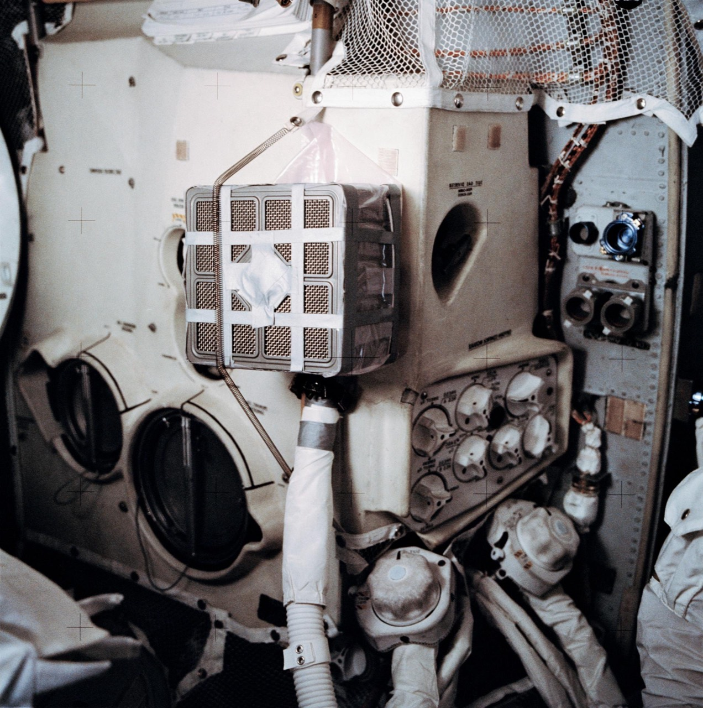

2150. A solar superstorm kills every chip on the Moon in eleven minutes. Everyone who could help is on Mars. To survive long enough to call Earth, Bhoomi has to learn how Earth got here: the fixes, the failures, and the people. She finds all of it in the junk and the records they left behind.
lib/era.css) on real photos.

2150 · the present. What Bhoomi finds, reads and plans is pencil on paper. The screens are dead.
A prologue, six chapters and an epilogue, all rendered from content.js, so this page and the game can't drift apart. Every historical event is real and sourced; the fiction is Bhoomi, her family, the storm and the rescue. The route: Shackleton → Malapert A (the library) → Mons Mouton (the drill) → Vikram (the mirror).